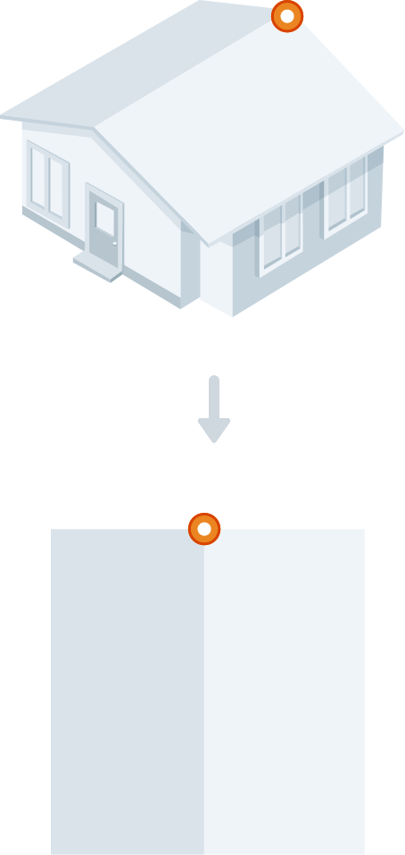
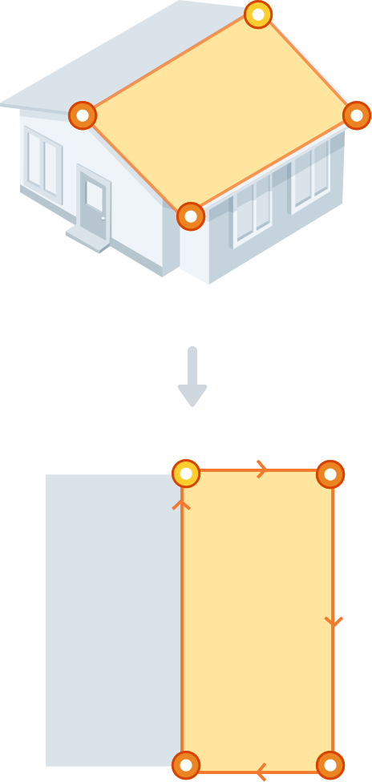
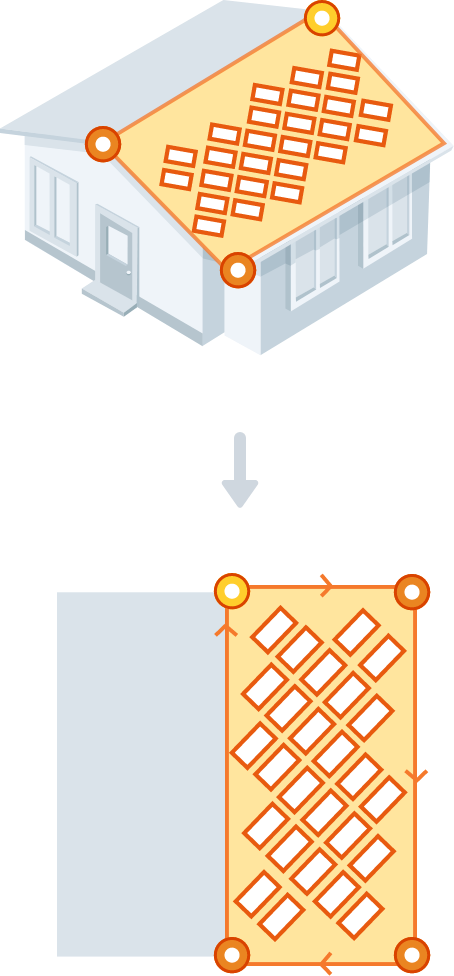

본문으로 바로가기
주메뉴로 바로가기
발전량 지도
지역별 일사량
한전정보
문의하기
STEP1.
설치할 곳의 외곽선 꼭지점을 클릭하세요.
완료
취소
Help
Help
완료
STEP1
설치할 곳의 외곽선과 꼭지점을 클릭하세요.
태양광을 설치할 지붕 한 면의 꼭지점을 클릭해 주세요.
STEP1
설치할 곳의 외곽선과 꼭지점을 클릭하세요.
나머지 꼭지점을 이어서 첫번째 꼭지점을 클릭해 도형을 만들어주세요.
STEP2
모듈이 배치되었습니다.
나머지 꼭지점을 이어서 첫번째 꼭지점을 클릭해 도형을 만들어주세요.
STEP1.
설치할 곳의 외곽선과 꼭지점을 클릭하세요.
태양광을 설치할 지붕 한 면의
꼭지점을 클릭해 주세요.

STEP1.
설치할 곳의 외곽선과 꼭지점을 클릭하세요.
나머지 꼭지점을 이어서 첫번째 꼭지점을 클릭해 도형을 만들어주세요.

STEP2.
모듈이 배치되었습니다.
나머지 꼭지점을 이어서 첫번째 꼭지점을 클릭해 도형을 만들어주세요.
